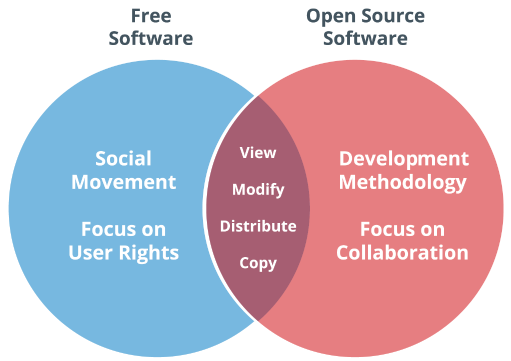

Free Software VS Open Source Software
Free software VS Open Source Software
The term
free software is often used interchangeably with OSS, and both share a great deal of overlap. However, some draw a distinction between the two. Richard Stallman, the founder of the free software movement, argues that the the terms share different values - in his words, “Open source is a development methodology; free softare is a social movement.” In other words, OSS is most concerned with fostering open collaboration, whereas free software is most concerned with upholding users' rights. Note that “free” is being used in the sense of freedom, not in the sense of having no monetary cost.
In an attempt to resolve this terminology dispute, some developers have adopted the term
free and open source software (FOSS) to describe any project that emobdies the values of both movements.
A Venn disgram of free software and open source software.